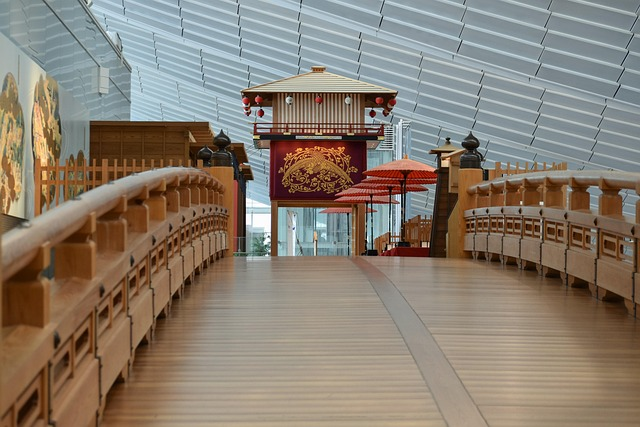
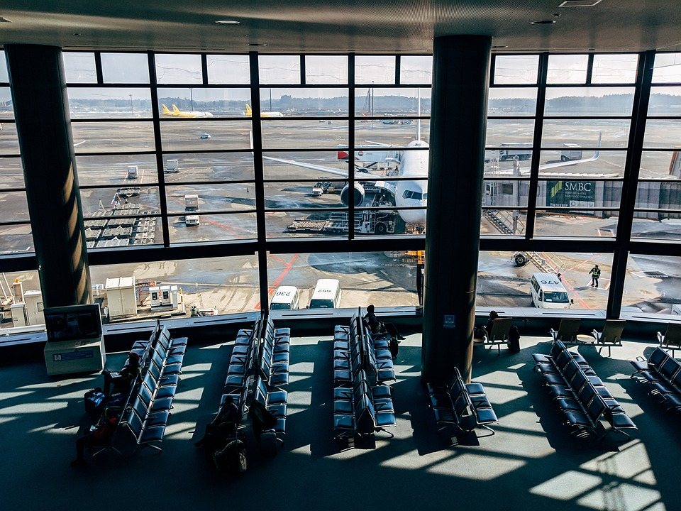
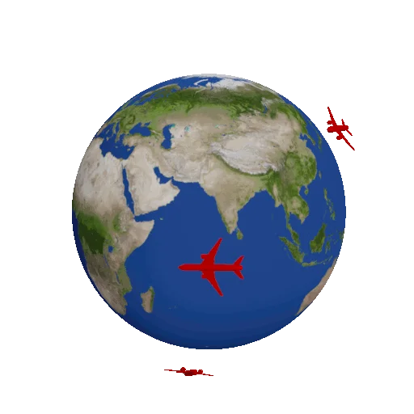

The largest airport in Japan by passenger volume is Tokyo Haneda Airport
(HND), although Narita Airport (NRT) near Tokyo is also very busy.
Haneda is closer to the city center and offers numerous domestic and
international connections. Narita primarily serves long-haul and
international flights and has larger terminals for transfers. Overall,
the airport complex in the Tokyo region experiences high traffic volume,
with consistent growth in passenger numbers. Both airports are important
air transport hubs for Japan and the Asia-Pacific region.
